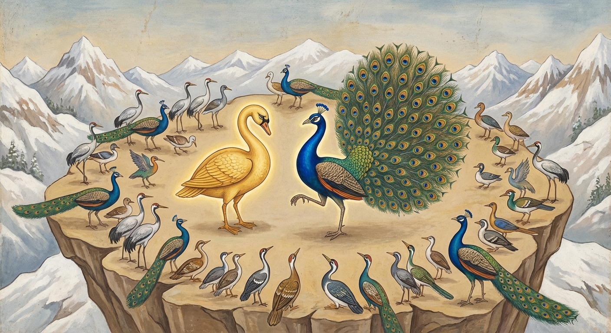

2. නච්ච ජාතකය (32)
“රුදං මනුඤ්ඤං” (නාදය මිහිරිය) යන මේ ධර්ම දේශනාව ශාස්තෲන් වහන්සේ ජේතවනාරාමයෙහි වැඩවසන සමයෙහි බොහෝ පිරිකර ඇති (බහුභාණ්ඩික) භික්ෂුවක් අරබයා දේශනා කරන ලදී. කථා පුවත පහත දැක්වෙන දේවධර්ම ජාතකයෙහි (ජා· 1.1.6) සඳහන් අයුරුම වේ.
ශාස්තෲන් වහන්සේ ඒ භික්ෂුවගෙන්, “මහණ, ඔබ බොහෝ බඩුබාහිරාදිය ඇත්තෙක් යැයි කියන්නේ සැබෑද?” යි විමසූ සේක. “එසේය, ස්වාමීනි” යි ඔහු පිළිතුරු දුන්නේය. “මහණ, කුමක් හෙයින් ඔබ බොහෝ බඩුබාහිරාදිය ඇත්තෙක් වූයේද?” යි විමසූ විට, ඔහු එපමණක් ඇසූ පමණින්ම කිපී, හැඳි පෙරවූ සිවුරු ඉවත ලා, “දැන් ඉතින් මේ විලාසයෙන් හැසිරෙමි” යි කියමින් ශාස්තෲන් වහන්සේ ඉදිරියෙහි නග්නව සිටගත්තේය. මිනිස්සු “චී! චී!” යයි පිළිකුල් කළහ. ඔහු එතැනින් පලා ගොස් හීන වූ ගිහිභාවයට පත් විය.
පසු දිනෙක භික්ෂූන් වහන්සේලා දම් සභා මණ්ඩපයේ රැස්ව, “ශාස්තෲන් වහන්සේ ඉදිරියේ මෙබඳු දෙයක් කෙළේය” යයි කියමින් ඔහුගේ අගුණ කතා කරමින් සිටියහ. ශාස්තෲන් වහන්සේ වැඩම කර, “මහණෙනි, දැන් කවර නම් කතාවකින් යුතුව හුන්නාහුද?” යි විමසූ සේක. “ස්වාමීනි, ඒ භික්ෂුව ඔබ වහන්සේ ඉදිරියෙහි, සිව්පිරිස් මැද ලැජ්ජා බිය (හිරි ඔතප්) අතහැර, ගම් දරුවකු මෙන් නග්නව සිට, මිනිසුන් විසින් පිළිකුල් කරනු ලබන්නේ, හීන වූ ගිහි බවට පෙරළී ශාසනයෙන් පිරිහුණේය. අපි ඔහුගේ අගුණ කතා කරමින් සිටියෙමු” යි භික්ෂූහු පැවසූහ. එවිට ශාස්තෲන් වහන්සේ, “මහණෙනි, ඒ භික්ෂුව ලැජ්ජා බිය නැති නිසා උතුම් වූ ශාසනයෙන් පිරිහුණේ දැන් පමණක් නොවේ. පෙරත් ඔහු ස්ත්රී රත්නයක් නොලැබීමෙන් පිරිහුණේය” යයි වදාරා අතීත කතාව ගෙනහැර දැක්වූ සේක.
අතීතයේ පළමු වන කල්පයෙහි සිව්පාවෝ සිංහයාව රජ බවට පත් කළහ. මත්ස්යයෝ ආනන්ද මත්ස්යයා ද, පක්ෂීහු සුවර්ණ හංසයා ද රජුන් ලෙස පත් කර ගත්හ. ඒ ස්වර්ණ හංස රාජයාට රූමත් හංස පෝතිකාවක වූ දියණියක් සිටියාය. හංස රාජයා ඇයට වරයක් දුන්නේය. ඇය තමාට රුචි ස්වාමියෙකු තෝරා ගැනීමට කැමැත්ත පළ කළාය. හංස රාජයා ඇයට එම වරය දී හිමාලයෙහි සියලු පක්ෂීන් රැස් කරවීය. නානාප්රකාර හංස, මොනර ආදී පක්ෂි සමූහයා පැමිණ විශාල ගල් තලාවක රැස් වූහ.
හංස රාජයා “විත් තමාට රුචි ස්වාමියෙකු තෝරා ගනු මැනවැ” යි දියණිය කැඳවීය. ඇය පක්ෂි සංඝයා දෙස බලන්නී, මැණික් පැහැති ගෙලක් හා විසිතුරු පිල් ඇති මොනරකු දැක, “මොහු මගේ ස්වාමියා වේවා!” යි කැමැත්ත ප්රකාශ කළාය.
පක්ෂි සමූහයා මොනරා වෙත ගොස්, “යහළු මොනර, රජ දියණිය මෙපමණ පක්ෂීන් මැද ස්වාමියෙකු තෝරන්නී ඔබ කෙරෙහි කැමැත්ත ඇති කර ගත්තාය” යි කීහ. මොනරා, “ඇය අදවත් මගේ බලය (හැකියාව) නොදකියි” යි සිතා, අධික සතුටින් ලැජ්ජා බිය (හිරි ඔතප්) බිඳ දමා, ඒ මහත් පක්ෂි පිරිස මැද පියාපත් විදහා නටන්නට පටන් ගත්තේය. නටන විට ඔහුගේ ශරීරයේ රහස් ප්රදේශ නොවැසී පෙනෙන්නට විය.

සුවර්ණ හංස රාජයා ලැජ්ජාවට පත්ව, “මොහුට තමා තුළ ඇති වන ලැජ්ජාව (හිරිය) හෝ බාහිරින් හටගන්නා බිය (ඔතප්පය) හෝ නැත. ලැජ්ජා බිය සිඳ දැමූ මොහුට මගේ දියණිය නොදෙමි” යි සිතා පක්ෂි සමූහයා මැද මෙම ගාථාව පැවසීය:
“ඔබගේ හඬ මිහිරිය. පිට පෙදෙස ද විසිතුරුය (බැබළෙයි). ගෙල පෙදෙස වෙරළු මිණි පැහැයට සමානය. පිල් කලඹ බඹයක් පමණ දිගුය. (එහෙත්) ඔබගේ නැටීම (ලැජ්ජා රහිත බව) හේතුවෙන් මගේ දියණිය ඔබට නොදෙමි.”
එහි අර්ථ විවරණය මෙසේය: ‘රුදං මනුඤ්ඤං’ යන්නෙහි ‘ත’ කාරයට ‘ද’ කාරය ආදේශ වී ඇත. එය ‘රුතං’ (හඬ/නාදය) විය යුතුය. ස්වභාවයෙන් ලැබුණ නාදය මිහිරි යනු එහි අර්ථයයි. ‘රුචිරා ච පිට්ඨි’ යනු ඔබගේ පිට පෙදෙස ද විසිතුරුය, ශෝභමානය යන්නයි. ‘වෙළුරියවණ්ණූපනිභා’ යනු ඔබගේ ගෙල වෙරළු මිණි වන් පැහැයට සමාන බවයි. ‘බ්යාමමත්තානි’ යනු එක බඹයක් පමණ වූ ප්රමාණ ඇත්තා වූ යන අර්ථයි. ‘පෙඛුණානි’ යනු පිල් ය. ‘නච්චෙන තෙ ධීතරං නො දදාමි’ යනු, ලැජ්ජා බිය බිඳ දමා නැටූ බැවින්ම, මෙබඳු නිර්ලජ්ජිත වූ ඔබට මාගේ දියණිය නොදෙමි යි කියා හංස රාජයා එම පිරිස මැදදීම තමාගේ බෑණා වන හංස පෝතකයෙකුට තම දියණිය පාවා දුන්නේය. මොනරා හංස දියණිය නොලැබ, ලැජ්ජාවට පත්ව එතැනින් ඉගිලී පලා ගියේය. හංස රාජයා ද තම වාසස්ථානයට ම ගියේය.
ශාස්තෲන් වහන්සේ, “මහණෙනි, මොහු ලැජ්ජා බිය බිඳ දමා උතුම් වූ ශාසනයෙන් පිරිහුණේ දැන් පමණක් නොවේ. පෙර ද ස්ත්රී රත්නයක් ලැබීමෙන් පිරිහුණේය ම යැ” යි වදාරා, මේ ධර්ම දේශනාව ගෙනහැර දක්වා පූර්වාපර සන්ධි ගළපා ජාතකය සමාප්ත කළ සේක. “එකල මොනරා නම් මේ බහුභාණ්ඩික භික්ෂුව විය. හංස රාජයා නම් මම ම වීමි.”
දෙවැනි වූ නච්ච ජාතක වර්ණනාව නිමාවිය.